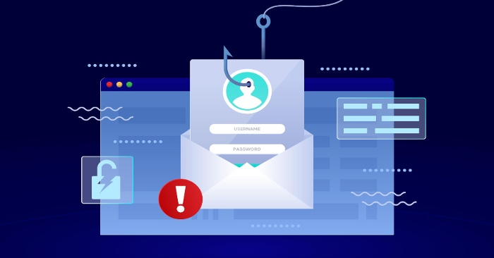
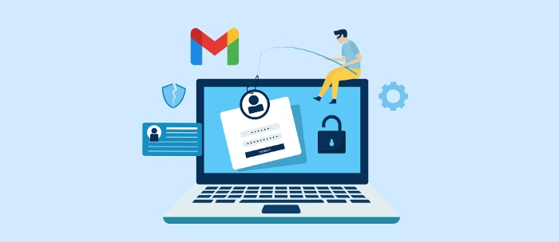

Why You Need An Anti-Phishing Solution
Hackers have gotten smarter, and phishing scams have become more sophisticated. So, what’s the best way to protect your personal information? A firewall can block access to malicious web pages, but it can’t protect you from being a victim of a phishing scam—a type of malicious scam that attempts to trick you into giving up sensitive information like usernames, passwords, Social Security numbers, and more. Anti-phishing solutions are an often-overlooked way to protect your information and identity while surfing the web, and we recommend ZenMate for all your internet surfing needs.
Spear phishing is like a rifle shot. As opposed to sending out phishing emails en masse, hackers target a specific person in spear phishing. The attackers may gather information about their target, using social engineering strategies, and combing through business and publicly available documents. They tailor the spear phishing to the particular target.
In a typical setup, cybercriminals endeavor to entice the victim into disclosing their login information. Once they have this login data, they utilize it to log in to the organization's network. Their tool, called the persistence mechanism, allows them to keep past network passes.

The hacker can try to get around the network three days later. Bulks of malware and even code are dropped onto the cybercriminals' servers where they analyze it or disarm encryption without needing to be detected.
After hacking an organization, the hackers usually delete all traces of their involvement. If they do this by erasing event logs and erasing their back doors, they maintain access to networks set up afterward.
What is phishing protection
Criminal hackers frequently rely on phishing attacks as a means to access an organization and steal sensitive information. Perceiving a few ways to protect yourself against these attacks can allow you to keep your company secure:
Awareness training
Because phishing scams target employees, employees must understand how they function, what to watch out for, and respond accordingly to protect themselves.Employees are trained to recognize malicious URLs and determine a safe way to respond to an email containing a dangerous attachment. They are also trained to recognise the dangers of disclosing passwords and other sensitive information and what to do if they receive a phishing email.
Phishing simulations
Hands-on experience is especially beneficial for understanding the data and recognizing phishing emails. Simulation studies allow employees to receive hands-on practice with simulated phishing attacks in order to better handle these attacks.These programs are most effective when they occur frequently and at greater intervals and focus on security issues employees are likely to run into based on their occupation, department, or location.
They also help you identify and reduce the threats of high-risk employees. When employees grasp awareness of a specific threat, you adjust your simulations to address a different threat.
Phishing simulAnti-phishing softwares
Anti-phishing software can help reduce industries' reliance on employees' anti phishing techniques. The software can examine the content of email, Internet pages, and numerous other methods to access data. The safety software can additionally suspend potential threats, blocking likely phishing emails before they reach an individual's inbox.

Why phishing protection is important
The most prevalent path for malware distribution is via phishing email. Regardless of whether your employees work at home or in the office, they will need to recognize the potential threats of phishing attacks and quickly respond.
The skills and confidence of employees can be improved with phishing training and simulations. Accordingly, your employees will be able to detect and disrupt phishing attacks much more quickly.
In summary, it may seem impossible, but you don't have to spend thousands of dollars on an enterprise-level secure email gateway to protect your company from phishing scams. There are viable solutions, such as Barracuda PhishLine, that offer enterprise-level features, but at a fraction of the cost.